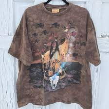
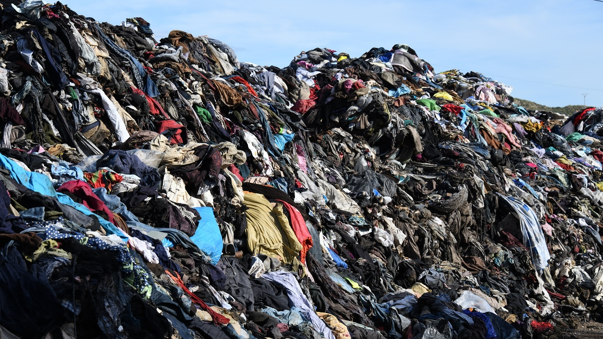

Dev's Vintage
This page is going to highlight some knowledge, adventures, personal best finds and eveything else vintage across the state. So follow along because there's A LOT to get through and so little time.
Starting off at homebase! AKA Denver!!
Colorado is a stronghold in the vintage community, boasting the most Goodwill locations within a single state. To top that off we have a solid base of vintage shops that are worthwhile, with a total of about 21 in all! Scattered across the state you can find a whopping 10 of these shops in the downtown area alone! That being said, I won't give away my trade secerets completely but I will give you this list of the best vintage shops in the area to get you on track!

Hustle Hard
Vintage collecting and reselling might sound easy but try it for yourself and let's see how you fare! The more you find is the less that goes to polluting!!! Check out this map made by SLCT Stock!
Reasons To Shop Vintage
Recycled clothing is a rising market, rapidly expanding due to influencers and celebrities marketing vintage in their pictures and videos across the web. If they know what's good then you should too! Stay fly while saving the earth!!!
Rising Market
The market for vintage clothing has been around for a long time, patiently waiting for people to recognize it's beauty. Now that we have the internet and social media the market has seized it's moment and it's BOOMING! You can catch any of your favorite influencers or celebs in vintage clothing and it's something to be happy about! There's always enough vintage to go around!
Individualistic
Fashion in the past decade hasn't been much of a sight to see. With the rising market comes more individualism to how you look. Any interest your mind can think of, I'm sure there's a vintage tee to go with it. It forces you to think outside the box and express yourself! So go wild and find something YOU like.
Recyclable
The fashion industry waste is one of the leading contributors to climate change and pollution. The only way we can combat this is to stop buying new, generic stuff and start shoping vintage! It's just one of the many ways we can do our part to stop climate change. This one might be some work but it's well worth it, so give it a try and see what you find! Don't forget to start with the map I gave you! Look fresh while helping the world my friends!
Support Your Local Vintage Resellers!
It's good to appreciate your local Goodwills and shops but if you're looking to join the vintage community, support your local resellers too! As a collector, I can vouch for the amount of time it takes just to snag one piece that someone might call a "gem". So if a piece is nice but high in price, I suggest you start hunting for some trades! Keep in mind, they put a lot of time into finding good pieces so they won't be haggled easily, but that doesn't mean not to try! They're good people though so you'll most likely get a good snipe with any one of them!


START WEARING VINTAGE!
When asked if you wear vintage, most people assume I mean tattered clothes and hand me downs. In the modern wave, we're trying to set the bar to be focused on local resellers rather than live auctions. One thing's forsure, you'll spend less. Meaning you'll be able to hunt more or buy more, keeping the works of wearable art preserved; rather than landfilled. There's always enough vintage to go around! Thank you for following me on this journey!
Developed by: Deven Garcia
Date: 9/25/21 Class Project
My First Find